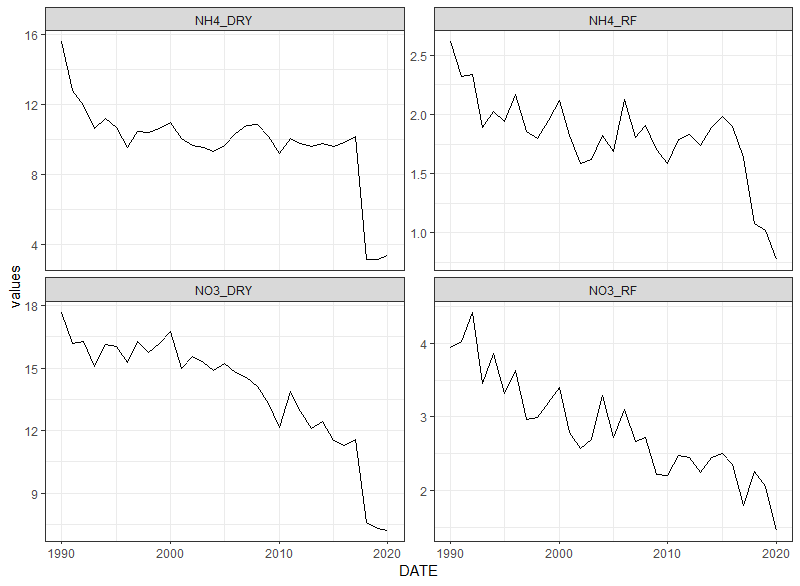

Introduction
According to Grizzetti et al. (2005) study done in three catchments in Europe atmospheric deposition constituted between 3 and 16% of total nitrogen inputs. Helsinki Commission (2018) report indicates the around 30% of nitrogen load to the Baltic Sea comes from atmospheric deposition, while it contributes from 1 to 10% of nitrogen load to inland surface waters in sea surrounding countries. Therefore setting atmospheric deposition to appropriate level should help better constrain other parameters responsible for nitrogen transport processes in the catchment.
SWAT+ considers nitrogen deposition (NH4 and NO3), but not phosphorous deposition. Both wet and dry deposition is taken into account. Wet deposition is absorption of compounds by rain and snow as they fall and is expressed in \(mg/l\), whereas dry deposition is direct adsorption of compounds to water and land surfaces, expressed in \(kg/ha/year\). SWAT+ allows constant, annual or monthly input data on atmospheric deposition. The choice is controlled by atmo parameter in the ‘codes.bsn’ file.
EMEP data
Nitrogen atmospheric could be obtained from local sources. However, if local data in not available or not all parameters available, deposition data can be extracted from European Monitoring and Evaluation Programme (EMEP) provided MSC-W model data files. The EMEP portal provides gridded 0.1\(^{\circ}\) resolution netCDF data over Europe. MSC-W model grid covers territory between -30 to 90 longitude and 30 to 82 latitude with 50x50 km2 grid cell. The parameters, which are needed for SWAT+ model are:
- DDEP_OXN_m2GridDry - deposition of oxidized nitrogen per m2 grid (\(mgN/m^2\));
- WDEP_OXN - wet deposition of oxidized nitrogen (\(mgN/m^2\));
- DDEP_RDN_m2Grid - dry deposition of reduced nitrogen per m2 grid (\(mgN/m^2\));
- WDEP_RDN - wet deposition of reduced nitrogen (\(mgN/m^2\)).
- WDEP_PREC - precipitation (\(mm\)).
These parameters can be used to prepare following SWAT+ parameters required for ‘atmo.cli’ input file:
- NH4_RF - ammonia in rainfall (\(mg/l\));
- NO3_RF - nitrate in rainfall (\(mg/l\));
- NH4_DRY - ammonia dry deposition (\(kg/ha/yr\));
- NO3_DRY - nitrate dry deposition (\(kg/ha/yr\)).
EMEP provides access to yearly, monthly, daily and hourly data. Data for a selected catchment with required time step could be extracted directly from EMEP website with get_atmo_dep function. Function requires just path to catchment boundary shape file and internet connection. Depending of the data time step selected (yearly to hourly), function will need more or less time to run (less with “year” selected, much much more with “hour”). More information about the inclusion of atmospheric deposition data in SWAT+ modeling is presented in the section 3.10 of SWAT+ modelling protocol.
library(svatools)
basin_path <- system.file("extdata", "GIS/basin.shp", package = "svatools")
df <- get_atmo_dep(basin_path)
##Plot results
ggplot(pivot_longer(df, !DATE, names_to = "par", values_to = "values"), aes(x = DATE, y = values))+
geom_line()+
facet_wrap(~par, scales = "free_y")+
theme_bw()
SWAT+ input
Atmospheric deposition data into SWAT+ model can be included via
‘atmodep.cli’ file. For this add_atmo_dep function was
designed. It could write yearly, monthly or whole modeled period
averages. Function requires only get_atmo_dep function output
for yearly or monthly data. SWAT+ model setup .sqlite
database has to be updated too. Thus, this function updates also
required tables. In case other than average yearly atmospheric
deposition data are used, t_ext function parameter should be
provided. Please read more in add_atmo_dep.
db_path <- "./output/test/project.sqlite"
add_atmo_dep(df, db_path)